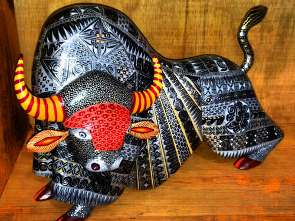
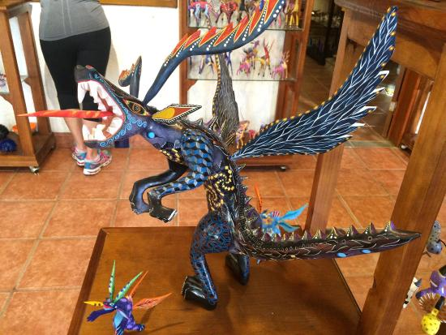

Alebrijes
En el pasado no se les llamaba alebrijes, sólo figuras talladas. El término alebrije tiene su origen en la familia Linares, muy famosa por sus piezas fantásticas elaboradas en cartón; Pedro Linares, una persona de mucho talento, le dio el nombre de alebrije inspirado en los sueños. Una persona constató cómo se vendía bien este tipo de trabajo y que gozaba de cierta popularidad; entonces pensó hacerlos en madera, pues el cartón tiene la desventaja de un fácil deterioro y sin duda en madera durarían más. Desde entonces se les quedó ese nombre y con el tiempo no sólo hicieron estas figuras, sino animales con muchos elementos imaginarios. Finalmente, hay otra versión en Arrazola, población donde también se elabora este tipo de artesanía. Se cuenta que a principios de los 80 Pedro Linares fue de visita con unos familiares y les mostró algunos de sus alebrijes, y Manuel Jiménez decidió elaborar seres fantásticos, propios de su cosmovisión, pero tallados en madera y con el estilo propio de la artesanía del lugar. Antes se elaboraban sólo animalitos, pero luego cambiaron. Los jóvenes comenzaron a trabajar otras figuras aportando nuevas ideas. Antes no se hacían dragones; después se comenzó a hacer monstruos, luego siguió el marcianito y de ahí lo que la inventiva artesanal y la aceptación de los compradores demandan. Con el incremento de la exportación los compradores piden figuras más creativas, no tan repetitivas. A pesar de ello se elaboran piezas que parecieran manufacturas por su similitud, aunque si bien .las figuras pueden ser similares por su forma y proporciones, por lo general la pintura las hace distintas. Algunas formas se repiten, de ahí que se les considere las más comerciales, como los perros, armadillos o iguanas, pero las figuras no sólo representan la fauna local, incluyendo los animales domésticos, sino los de la fábula local. Desde los años 80 los artesanos comenzaron a elaborar diversas figuras: jirafas, perros, gatos, elefantes, cebras, venados y todo tipo de animales, incluso delfines, tiburones y otros peces. Después vino la talla de las figuras fantásticas, dragones y marcianitos.

